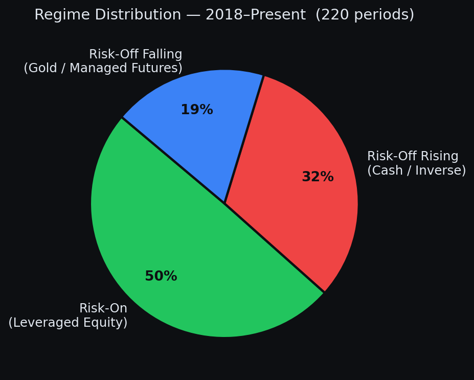
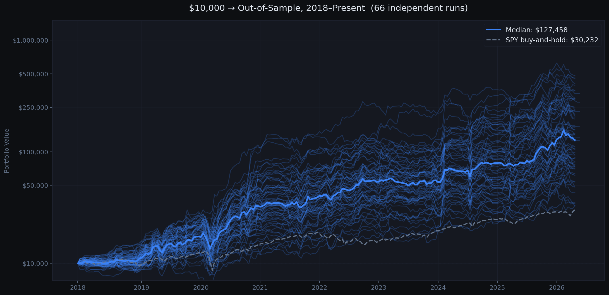
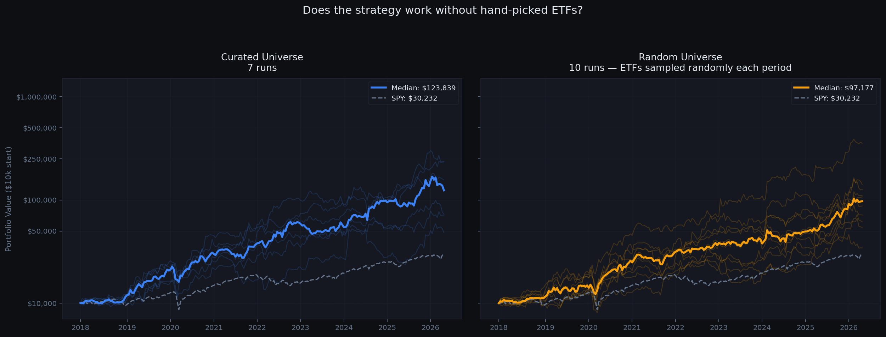
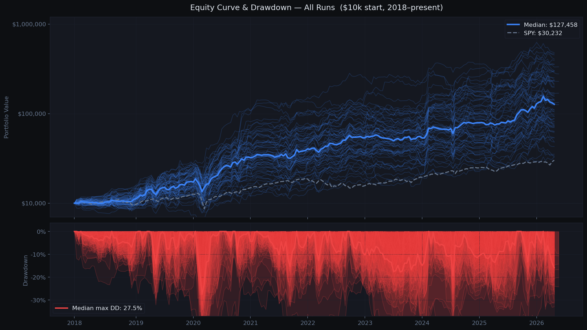
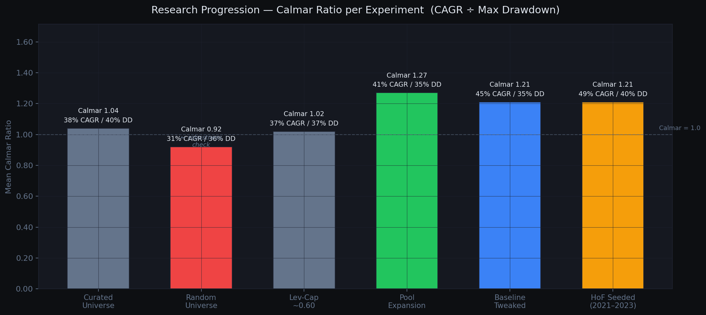
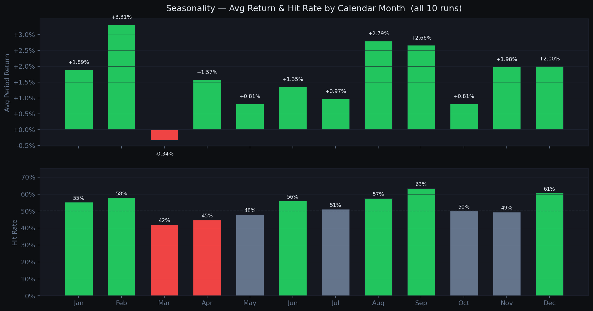
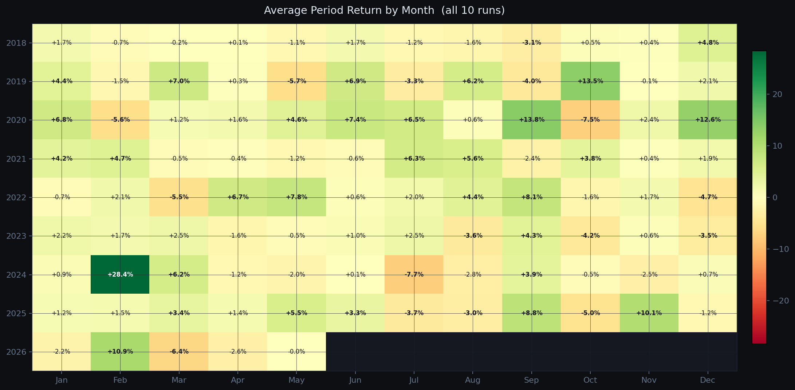

The walk-forward methodology
The core problem with most backtests: the researcher sees all the data, then fits parameters to it. The result looks good on paper but fails live because the optimizer learned noise, not signal.
StratScout uses walk-forward validation to prevent this. Every 14 days, the optimizer trains on the trailing 12 months of data split across 3 sub-windows for overfit resistance, then deploys those parameters for exactly one period. The next period, it trains again from scratch on fresh data. No parameter ever sees the period it will trade.
The result is a long chain of independent out-of-sample bets. The equity curve you see is what actually would have happened.
Regime detection
Before picking ETFs, the system classifies the current market regime using two ratio signals:
- AGG vs BIL: if bonds outperform cash over 90 days: Risk-On. Rotate into leveraged equity ETFs.
- TLT vs BIL (when risk-off): if long treasuries underperform cash: Risk-Off Rising Rates. Hold cash or inverse ETFs.
- Otherwise: Risk-Off Falling Rates. Rotate into gold, managed futures, tail-risk hedges.

The regime signal is the alpha. ETF selection within a regime matters less than getting the regime right. We proved this by running the same system with a randomly sampled ETF pool - performance dropped but did not collapse.
Baseline results
The first full run used a hand-curated universe of ~20 ETFs selected for regime fit. We ran 10 independent seeds to measure variance. Each seed uses different random trial sequences, producing genuinely different equity curves.

The wide spread across runs is expected and honest. Random search does not always find the same params, and some seeds navigate 2020-2021 better than others. The median tells the real story.
Stats shown are for the initial 10-run curated baseline. The chart above includes all 66 runs across all experiments.
Robustness check: does ETF selection matter?
A reasonable objection: maybe the results are just curve-fitting to specific ETFs. To test this, we ran the exact same system but randomly sampled the ETF pool from a 47-symbol universe each period. If the strategy only worked because we hand-picked the right ETFs, this should collapse.
| Configuration | Mean NAV | Mean CAGR | Mean Calmar |
|---|---|---|---|
| Curated universe | $182,940 | +37.6% | 1.04 |
| Random universe (10 runs) | $114,700 | +31.1% | 0.92 |

Performance drops when you randomize the universe but does not collapse. The regime gate is doing real work. Curated ETF selection adds value, but the signal is not purely about which ETFs you pick.
Reducing drawdown
The baseline had a 40% mean max drawdown. We introduced lev_3x_cap: a parameter capping total portfolio weight in 3x leveraged ETFs. Rather than fixing it, we let the optimizer choose from a range and see where it converged.
The optimizer consistently chose ~0.60, capping 3x leverage at 60% of the portfolio. Mean max drawdown dropped from 40% to 37% with no CAGR penalty.

Pool expansion - the breakthrough
The risk-off rising regime was a persistent weak spot. Inverse ETFs like QID and SQQQ decay over time - holding them for a full 14-day period in choppy rising-rate conditions consistently lost money. The fix was obvious in hindsight: add BIL (cash) as a valid option in that regime and let the optimizer decide.
We also added managed futures (KMLM, DBMF) and a tail-risk hedge (TAIL) to the risk-off falling pool, targeting periods where equity correlations spike toward 1.
| Experiment | Mean NAV | Mean CAGR | Mean Max DD | Calmar |
|---|---|---|---|---|
| Levcap baseline | $186,364 | +36.6% | 37.0% | 1.02 |
| Pool expansion | $230,988 | +41.2% | 35.1% | 1.27 |
BIL was selected in 145 of 218 risk-off rising periods (66% of the time). Cash beat every inverse ETF in that regime. Simply having cash as an option was worth +$44k mean NAV and -1.9pp max drawdown.
What we tried and killed
Showing only what worked would be dishonest. These are the experiments that looked promising and failed.
Added 6 alternative signals as extra optimizer inputs. They hurt CAGR by 21 percentage points versus the clean baseline. Fully removed from the codebase, not just disabled.
Scale position size down when realized vol is high. In practice it reduced CAGR without meaningfully reducing drawdown. The system was selling into volatility spikes that often reversed quickly.
Double optimizer trials after a losing period, quadruple after two consecutive losses. In practice it overfit in extended choppy regimes, spending 1200 trials on periods the market made unwinnable regardless of params.
Skip to cash when the optimizer confidence score falls below a threshold. We tested every threshold from 25 to 65. Train score is not predictive of out-of-sample success at any threshold. The filter just kills CAGR.

Hall of Fame seeding
Every optimization period starts from scratch with pure random search. This is statistically clean but wasteful: we rediscover things the optimizer already learned in prior periods.
HoF seeding injects a small number of historically proven parameter sets as fixed trials at the start of each search. Seeds are selected by matching the current market regime using the actual AGG/BIL and TLT/BIL signals, filtered to only high-quality periods (val_return above 2%, Calmar above 0.8).
Seeds are strictly date-gated: a period can only be seeded from completed prior periods. No lookahead. Seeds count for only ~8% of total trials (25 out of 300), so random exploration still dominates.
(2021-2023 hard window)
(same window)
2.6x higher median NAV and 3.8x better Calmar over the hardest 3-year window in the dataset. Full 2018-present comparison is currently running.
How are seeds selected?
Seeds are matched by three criteria:
- Actual regime: AGG/BIL and TLT/BIL ratios determine whether you are in risk-on, risk-off rising rates, or risk-off falling rates. Seeds from the same regime are prioritized.
- Performance quality: only periods with val_return above 2% and Calmar above 0.8 qualify. Marginal wins do not seed forward.
- Recency: seeds are sorted by Calmar ratio descending so the best risk-adjusted performers come first.
All seeds are strictly date-gated: WHERE month < current_period. No future data can leak in.
Does this cause overfitting?
It can. The guardrails that keep it honest:
- Seeds only count toward ~8% of trials (25 out of 300). The other 275 are pure random, keeping the search space wide.
- Seeds compete on merit; scored against the same 3 training sub-windows as every random trial. If last period's params do not generalize, they lose to random and do not get used.
- Regime gating prevents rising-rate params from bleeding into risk-on periods and vice versa.
The real risk: consecutive similar regimes: If you are in risk-on for 10 straight periods, the same params keep winning and keep getting seeded. The optimizer reinforces a narrow corridor. When the regime flips it may be slower to adapt. This is the subtler form of overfitting. Not cheating on data, but converging prematurely on a local optimum during a persistent regime. Mitigation in progress: capping how many times the same param fingerprint can appear in the HoF within a rolling window.
Empirical result (2021-2023 hard window)
| HoF Seeded (25/300 trials) | Baseline (no seeds) | |
|---|---|---|
| Median NAV | $33,408 | $13,067 |
| Median CAGR | +48.9% | +9.3% |
| Median Max DD | 40.4% | 30.9% |
| Median Calmar | 1.21 | 0.32 |
Should I turn it on?
Default is off (--hof-seeds 0). Turn it on if you have at least 1-2 full runs worth of HoF data (run build_hof.py first), are willing to accept slightly wider drawdowns for meaningfully higher returns, and understand the consecutive-regime risk. Recommended value: --hof-seeds 20 to --hof-seeds 30. Above 50 starts to crowd out random exploration.
Going live
The strategy runs live in a Schwab Roth IRA. Every 14 days: download fresh data, run the optimizer on trailing 12 months, deploy the winning parameters for the next period. The live equity curve appends to the same walk-forward database, so backtested and live periods are directly comparable.

